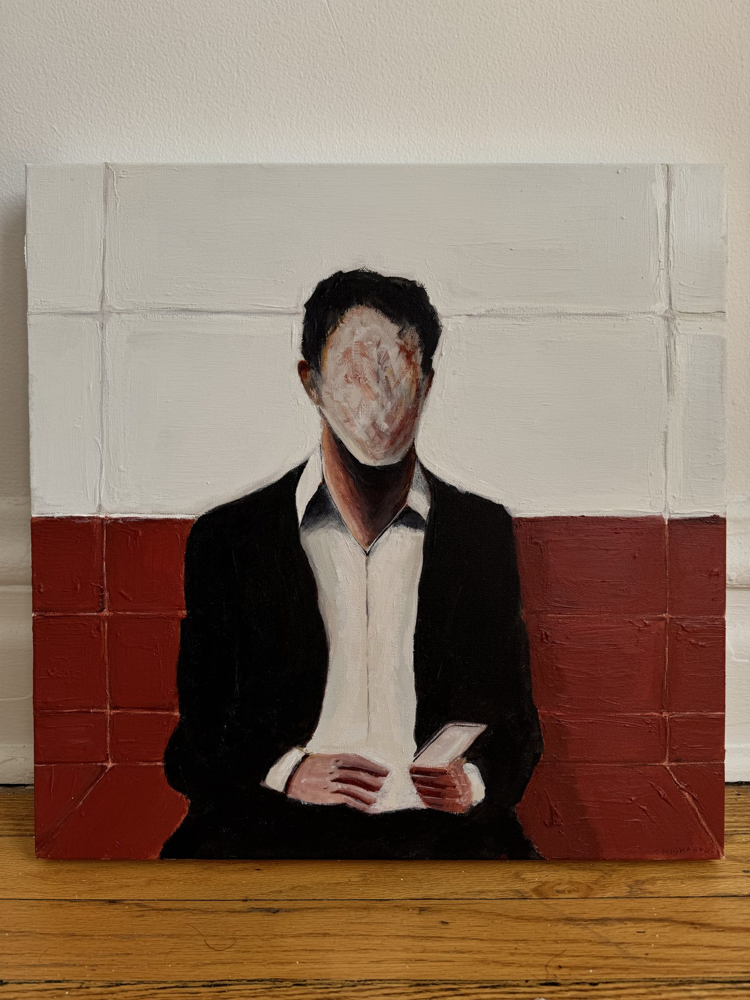
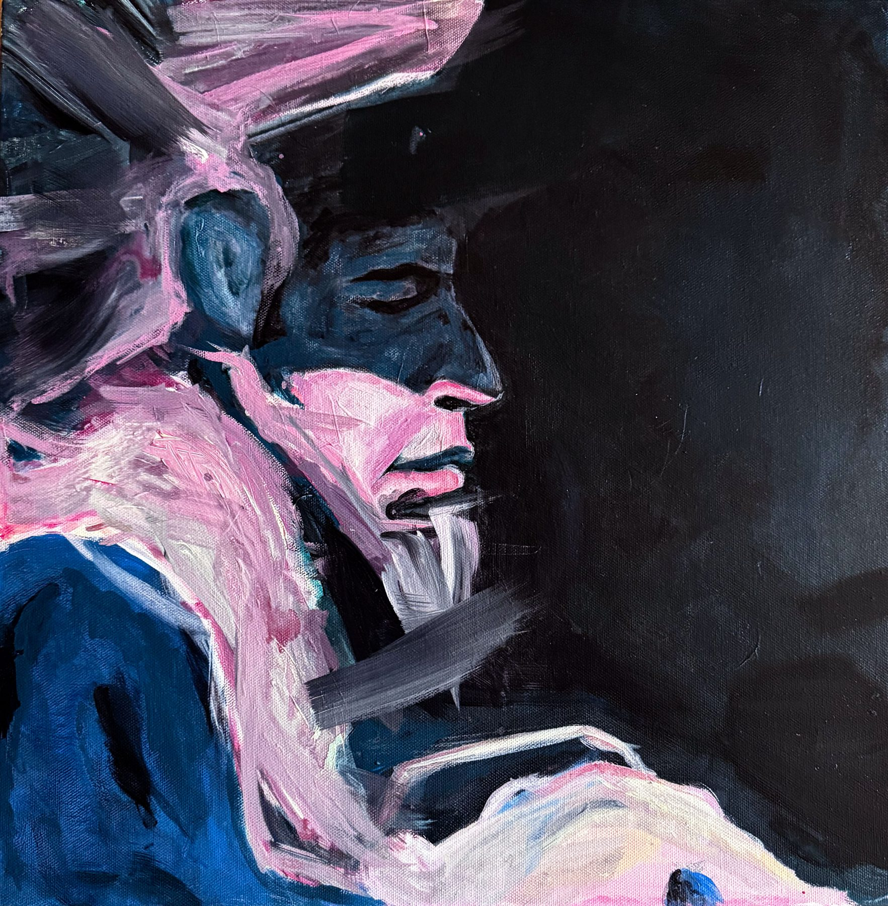
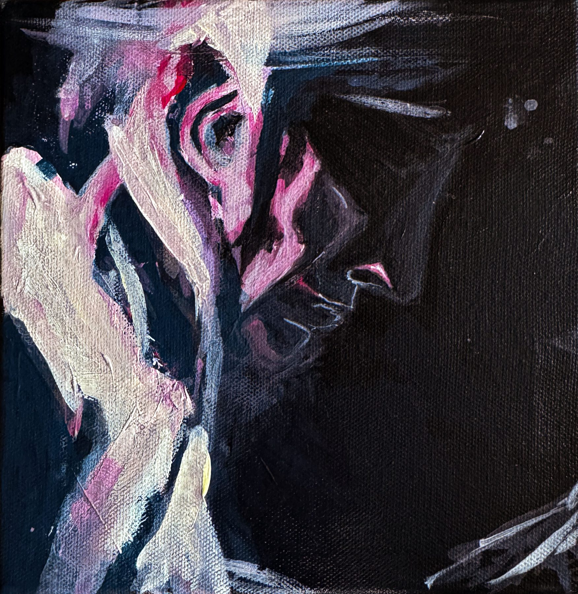
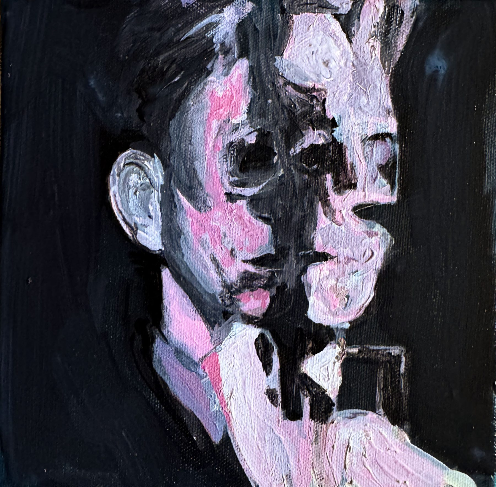
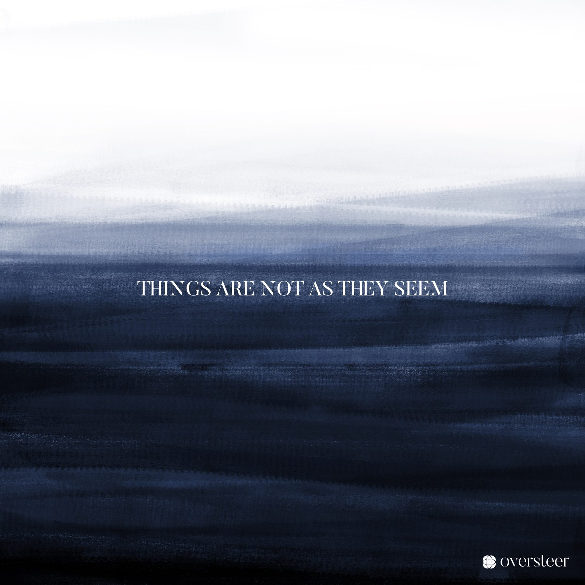
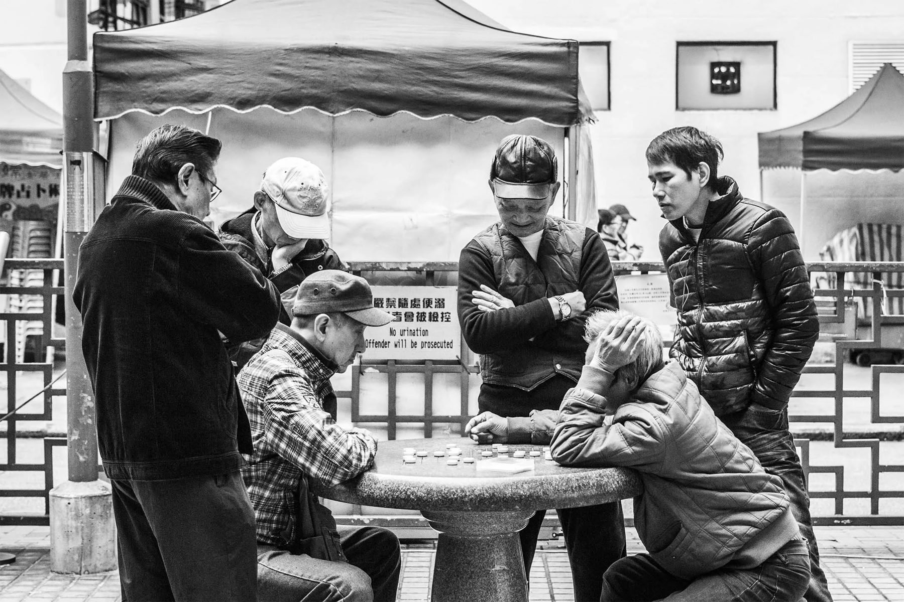

etc.
Art
“Clean Lines, Crooked Shadows”
As a designer tries to remain objective in their practice, balance conformity and competition, and take on the traumas of those they work with, they slowly lose their own identity.
2025
Acrylic on Canvas
Exhibited at Herron School of Art and Design Faculty Exhibition, Indianapolis

Human-Machine Reconfigurations 1-3
2026
Acrylic on Canvas



Music
I compose contemporary classical music under the name 'Oversteer'.
You can find my EP, “Things Are Not as They Seem” on most streaming platforms:

Fiction
16 September 2020
4 March 2018
14 August 2017
13 August 2017
13 November 2016
16 October 2016
13 August 2016
16 June 2016
Photography
Street photography across cities and contexts. View here.
